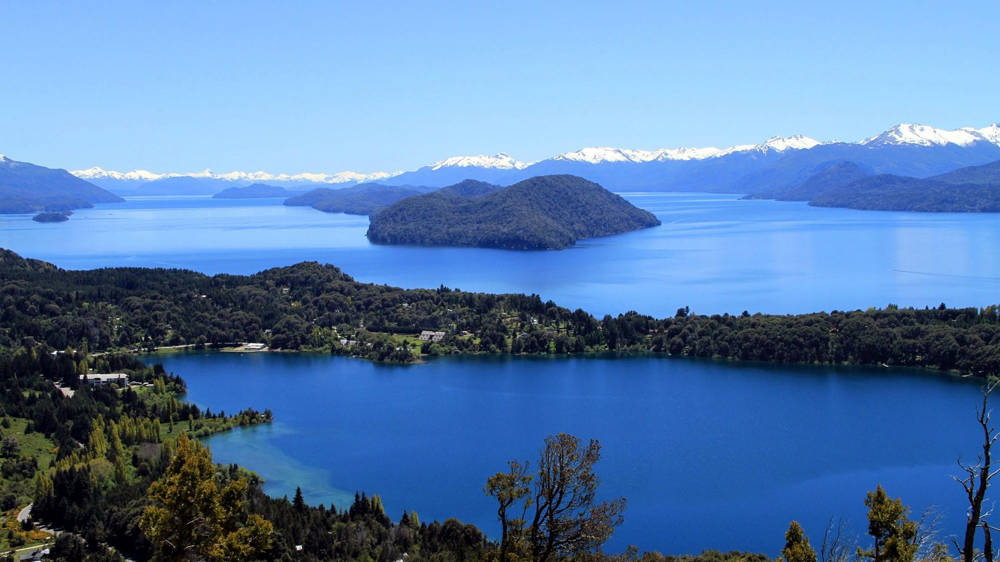
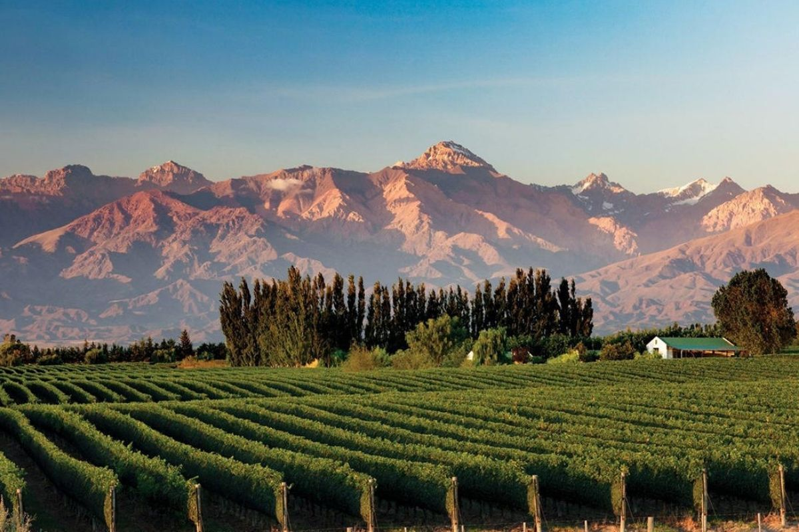
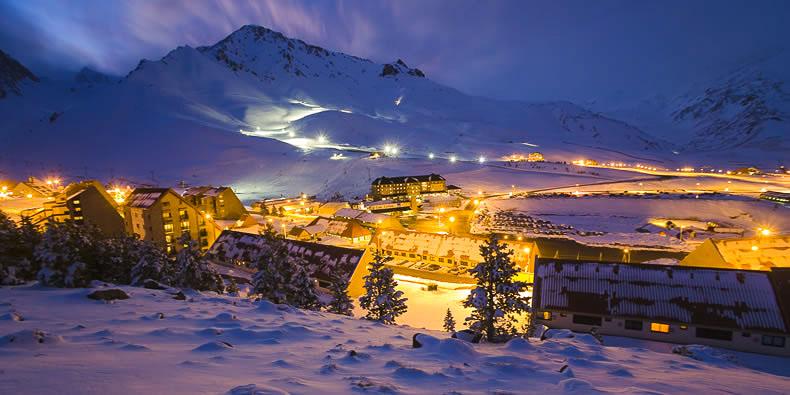

Conociendo Mendoza . . .

Valle de Uco
La mítica Ruta 40 es el gran portal turístico que recorre el Valle de UCO conformado por los departamentos de San Carlos, Tunuyán y Tupungato , es una verdadera postal enmarcada entre el Cordón del Plata y el Portillo, con la vista coronada por el Cerro Tupungato, que domina todas las tierras. El Cordón del Plata entre las vegas del Alto de Las Carreras, sitio de históricas estancias jesuíticas ganaderas y actualmente zona productora de cebada, papa y alfalfa, se integra al circuito del Valle de Potrerillos (Luján de Cuyo). En este tramo se encuentra el Chateau de Ancón, elegante castillo estilo europeo en medio de frutales y viñedos y posteriormente llegar al pueblo de San José y recorrer su antigua capilla. La imponente Quebrada del Cóndor es uno de los magníficos lugares para disfrutar a pleno una cabalgata y observar nidos de cóndores. Esta zona se destaca por la producción de excelentes sidras, jugos, conservas y esencias, obtenidas en establecimientos industriales y bodegas de alta gama. Los Caminos del Vino constituyen una apasionante atracción, en la cual la gastronomía gourmet maridada con vinos consagrados, alojamientos temáticos y emprendimientos artesanales se combinan para ofrecer una receta local para alcanzar la más sabrosa placidez.
Villavicencio
La reserva natural Villavicencio es un área natural protegida en el departamento Las Heras. Está ubicada a 50 km de la ciudad de Mendoza, entre las depresiones del valle de Uspallata y las planicies orientales de la precordillera de los Andes. La visita a Villavicencio se puede realizar con excursiones de medio día de duración que ofrecen agencias de viajes en la ciudad de Mendoza. En la Ruta 52 a 33 km. de la ciudad hay una parada obligada para visitar el Monumento Histórico de Canota que nos recuerda la gesta libertaria. El monumento se levanta en el mismo lugar donde el General San Martín dividió el ejército de los Andes en dos columnas una a su mando y la otra al mando del General Las Heras para luego cruzar los Andes por diferentes pasos y liberar Chile. Después de un camino de curvas conocido como Los Caracoles de Villavicencio se llega a la reserva natural donde se encuentra el viejo hotel y una capilla. Para ingresar a la reserva de sebe pagar un ingreso por persona. En la reserva funciona un centro de visitantes y se realizan caminatas por diferentes senderos. En la reserva hay dos senderos que invita a las caminatas: Sendero a los Petroglifos de Canota y Sendero al origen del agua Villavicencio. También se puede acceder a un mirador para obtener una hermosa vista del Valle de Villavicencio. Desde el hotel viejo se puede continuar camino por Los Caracoles para llegar a los miradores más altos.


Las Leñas
En pleno corazón de la Cordillera de los Andes, en la provincia de Mendoza y a tan sólo 1.200 km de Buenos Aires, se encuentra el centro de ski número 1 de América Latina: Las Leñas. La magia de este centro de ski de alta montaña es el resultado de la combinación entre naturaleza, confort, diversión, aventura y relax. Su base está a 2.240 metros de altura sobre el nivel del mar y su cumbre a 3.430 metros. Está ubicado a 80 km de Malargüe, 200 km de San Rafael, 342 km de Mendoza, 1.200 km de Buenos Aires, 800 km de Córdoba y 1.000 km de Rosario. Este complejo turístico internacional brinda unas vacaciones inolvidables para todos los amantes del ski y el snowboard. Cuenta con una calidad de nieve insuperable, gastronomía internacional e instalaciones hoteleras de primer nivel, dentro de un marco de seguridad y tranquilidad para toda la familia. Gracias a su ubicación geográfica, Las Leñas ofrece una prolongada temporada de nieve que se extiende desde el mes de Junio hasta Septiembre inclusive.